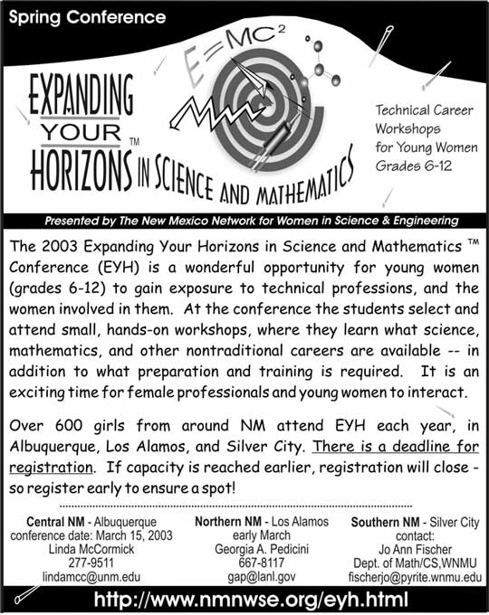

New Mexico Network for
WOMEN IN SCIENCE & ENGINEERING
PO Box 1360, Los Alamos, NM 87544
http://www.nmnwse.org/
THE NETWORK NEWS
May 2003
|
|
New Mexico Network for
|
|
NMNWSE Board of Directors
President
Past President
Vice President/President-Elect
Secretary
Treasurer
Annual Meeting
Archives
Elections
EYH Coordinator
Fund Raising
Membership
Newsletter
Publicity
Policies and Procedures
Science Fair
Central Chapter
Eastern Chapter
Northern Chapter
Southern Chapter
|
Started in 1986 during former Governor Bruce King´s second tenure, the prestigious award honors 20 women, selected from statewide nominations, for their exceptional contributions and achievements.
Potter, Enter and Albert were recognized at the Governor's Award for Outstanding New Mexico Women banquet May 3 at the Hyatt Regency in Albuquerque.
The Commission on the Status of Women annually honors women from around the state who are actively involved in their communities, are leaders in their profession or occupation and have worked to implement positive change in their community.
A Network Picnic is in the planning stages, perhaps the weekend of August 16 at Tinka Gammel's new home in Los Alamos. If you'd like to participate/help/attend we'll have a sign-up sheet on our web site as well as phone and email contacts, so please put a circle around that weekend. We'll have the exact date and time available VERY soon!
The meeting was held at dede's home in Santa Fe
Mary Campbell, Carol LaDelfe, Tinka Gammel, Yolanda King, dede Collins, Debby Potter, Janie Enter; proxy votes held by dede = Jeanne Banks, Barbara Torres and Carol held Catherine Hensley´s proxy vote.
Mary started a book of correspondence, including emails. She requested a free photocopy license to include a newspaper article about an award for Diane Albert printed in the Santa Fe New Mexican. Yolanda received an award from the American Institute of Aeronautics and Astronautics. Kelly Bitner received the Trailblazer Award. Congratulations to all!
Debby´s written report is attached.
A motion was introduced by Tinka, and seconded by Yolanda, that an information package inviting membership be sent to each EYH Chair for distribution to all adults at each conference this year. The package would include a letter asking for their membership and explaining the benefits; a flyer about the organization; and a membership form. Debby will prepare the cover letter and submit it to the Board. The Board will distribute packages to EYH Chairs. The letter would state that the organization needs their ideas and explain how NMNWSE is the licensed organization (through the Math Science Network) to conduct EYH conferences in New Mexico.
A hard copy report from Kim was distributed. (attached)
Kudos to Kim Linder for doing a great job putting together the flyer announcing EYH for insertion into newspapers.
We have a color pdf file of the career book, and are still planning to use CD ROMs for distribution. One quote was for $2.00 although they could be donated for about 30 cents each. Debby has requested donation of 1000 disks from Office Depot and IBM Corporation. Labels (with our logo, EYH, and list of sponsors) and a paper or plastic jacket will also be needed. The National Labs can print the labels if the donor provides blank labels. Brenda needs labels from Tinka stating that the career books were printed by Honeywell.
Carol LaDelfe suggested LANL EES and others to work with the Valles Caldera Trust on a site for environmental education, geoscience instruction (data collection, mentors). One option is to expand the existing program at the Girl Scout Camp in the Jemez to a new site at the Valles Caldera. Janie of C Division (Chemistry) wants to help.
the meeting was held at Debby Potter's home in Alameda.
Attendance: Kelly Bitner, Mary Campbell, dede Collins, Janie Enter, Tinka Gammel, Catherine Hensley, Yolanda King, Carol La Delfe, Kim Linder, Debby Potter.
Office Depot seems to have gotten our request confused with another. We requested 2000 (or 1000?) CD-Rs for recording the Career Booklet files but received a gift card for $200 to wrong organization. A letter was sent to the McCune Foundation; received a phone call from McCune, resulting in $10,000 award.
New Mexico Childrens' Foundation to be heard from in January.
Numerous potential donors were recommended to Debby and she plans to send solicitation letters to at least some of them.
Other details are outlined in the hardcopy report submitted by Debby that was passed out at the meeting.
Mary has a letter from Yolanda for archives, no written report. Question about Articles (or Certificate) of Incorporation was brought up--can we get copies from Archives or from the Treasurer´s files? Treasurer has Certificate number so could have the "Articles."
Brown Wrapper published 2 Fridays ago (at right), one will be saved for Archives.
Dana has bags for Central and they have enough Career booklets. Central will have their conference on March 15th, has 21 of 30 presenters lined up and appears to be getting a good response. Expecting 400 girls plus several presentations for adults. Joan Woodard, Executive Vice President and Deputy Director for Sandia National Laboratories will keynote. Their budget was submitted for the 2003 EYH conference.
Los Alamos Women in Science (Northern Chapter) will hold their EYH on March 11 and is looking for 150 and has approximately 15 presenters lined up.
Central´s bank balance of $1300 has been transferred to the Central EYH bank account.
LAWIS web site now found at LAWIS.LANL.GOV and the listserver email address, lawis@lanl.gov, is now for "members" only.
Debby proposes that there be a speaker's fee which would cover membership. (note: Central members mostly did not get notified of this year's EYH). Discussion resulted in requesting Debby to hold her idea until the organization can get better organized. Strategic planning sessions are needed, hopefully by June 1. A facilitator might be helpful. Yolanda suggests an hour per a couple of board meetings.
Yolanda's ideas were solicited for Governor's award (due Feb 23) and we are still open for more names. Question was raised as to whether we might be able to put together a list of members who have previously received the award, to be posted on the web site.
These are not feasible. Corporate memberships are not currently feasible, would possibly conflict with corporate grants.
Janie Enter checks another box weekly and will be available to open/check the NMNWE box as well She received the spare key from Carol La Delfe.